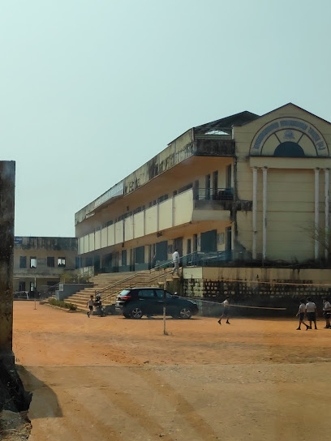

MOUNTAIN VIEW ENGLISH MEDIUM SCHOOL
Mountain view english medium higher primary school, puttur - located in urban area of puttur block (tehsil). the location of school is ward no. 7 in dakshina kannada district, karnataka. Pin code of ward no. 7 is 574201.
